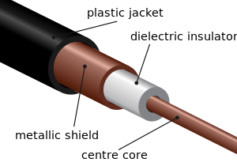
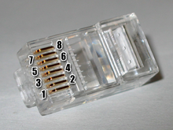
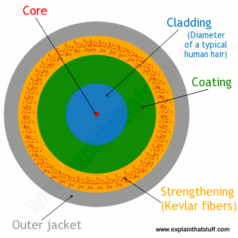

ប្រភេទខ្សែកាបតបណ្ដាញ¶
ខ្សែកាប ជាមធ្យោបាយដ៏សាមញ្ញមួយក្នុងការដឹកជញ្ជូនសញ្ញាទូរគមនាគន៍(communication signals)នៅក្នុងបណ្ដាញLAN (Local Area Networks)។ ខ្សែកាបទាំងនោះមានបីប្រភេទ ដែលពេញនិយមប្រើប្រាស់៖ coaxial, twisted-pair, និង fiber-optic។ បណ្ដាញLANបច្ចប្បន្ននេះ twisted-pairជាប្រភេទខ្សែកាបដែលប្រើច្រើនបំផុត តែខ្សែកាបអុបទិក(fiber-optic)ក៏កំពុងមានកំនើនការប្រើប្រាស់ផងដែរ ជាពិសេសវាផ្ដល់នូវសក្ដានុពលបណ្ដញខ្ពស់។
ខ្សែកាបCoaxial¶
ខ្សែកាបcoaxialមើលទៅស្រដៀងទៅនឹងខ្សែកាប ដែលប្រើប្រាស់ដើម្បីនាំសញ្ញាទូរទស្សន៍(signal)ចុះឡើង។ ស្នូលខាងក្នុងមានខ្សែទង់ដែង សំរាប់បញ្ជូនសញ្ញាអេឡិចត្រូនិច។ ស្នូលនេះរំព័ទ្ធដោយជ័រទន់ មានមុខងារកាត់ផ្ដាច់ការចំលងអគ្គិសនី។ ស្រទាប់បន្ទាប់ជា ទង់ដែង ឫលោហៈធាតុក្រងចូលគ្នា វាជួយកាត់បន្ថយអាំងទែផេរ៉ង់អេឡិចត្រូម៉ាញ៉េទិច(electromagnetic interference)ពីមានឥទ្ធិពលពីខាងក្រៅ។ ស្រទាប់ចុងក្រោយ ប្រៀបដូចអាវការពារ(cable jacke) ដែលរុំការពារពីការបំផ្លាញផ្សេងៗ។
ខ្សែកាបcoaxialចែកជាពីរប្រភេទ គឺ thinnet និង thickent។ ទាំពីរប្រភេទនេះមានល្បើនបញ្ជូនអតិបរមា ១០Mbps។ ខ្សែកាបនេះប្រើសំរាប់បណ្ដាញកុំព្យូទ័រ តែសព្វថ្ងៃនេះត្រូបានជំនួសដោយប្រភេទខ្សែកាបtwisted-pair។
ខ្សែកាបTwisted-pair¶
ខ្សែកាបប្រភេទនេះ មានខ្សែចំនួន៤គូ។ ខ្សែទាំងនេះរុំព័ទ្ធ(ឆ្វាក់ចូល)គ្នាទៅវិញទៅមក ដើម្បីកាត់បន្ថយផលរំខាន crosstalk។ នេះគឺជាប្រភេទខ្សែកាបដែលមានភាពពេញនិយមប្រើប្រាស់នៅក្នុងបណ្ដាញLANs។
ខ្សែកាបtwisted-pairមានពីរប្រភេទ គឺ UTP(Unshielded Twisted-Pair) និងSTP(Shielded Twisted-Pair)។ ភាពខុសគ្នាដោយសារតែ STPមានថែស្រទាប់កាត់ផ្ដាច់(insulation)ដែលការពារទិន្នន័យពីផលរំខាងខាងក្រៅ(noise)។ តែបើធៀបនឹងUTP គឺSTPមានដំលៃថ្លៃជាង និងពិបាកក្នុងការប្រើប្រាស់(installing)។

ខ្សែកាបtwisted-pairប្រើប្រាស់ក្បាល់ភ្ជាប់ 8P8C។
ខ្សែកាបអុបទិក¶
ខ្សែកាបអុបទិក(Fiber-optic cabling) គេប្រើដើម្បីបញ្ជូនទិន្ន័យឌីជីថលក្រោមរូបភាពជាសញ្ញាពន្លឺ។ ប្រភេទខ្សែកាបនេះ បណ្ដូលខាងក្នុងជា សុីលីកា ឫក៏កញ្ចក់(silica or glass)ដែលហំព័ទ្ធជារបុំ។
ខ្សែកាបអុបទិកអាចបញ្ជូនទិន្ន័យលើរយៈចំងាយឆ្ងាយជាង និងចំនួនកំណត់ព័តមាន(bandwidth)ខ្ពស់ជាង ខ្សែកាបផ្សេងៗ តែវាជាប្រភេទដែលថ្លៃបំផុតផងដែរ។
- វាមានពីរប្រភេទ
- Sigle-mode fiber(SMF) - ប្រើប្រាស់កាំរស្មីតែមួយ នៃពន្លឺដើម្បីនាំទិន្ន័យ
- Multi-mode fiber(MMF) - ប្រើប្រាស់ពហុកាំរស្មី នៃពន្លឺដើម្បីនាំទិន្ន័យ
- ប្រភេទកាបដែលនិយមប្រើបំផុត
- ST(Straight-tip connector)
- SC(Subsribe connector)